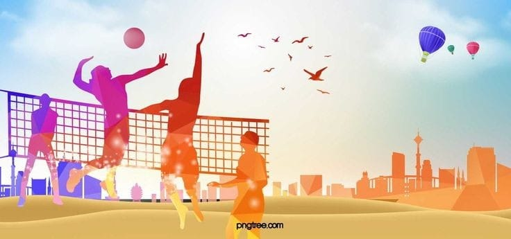
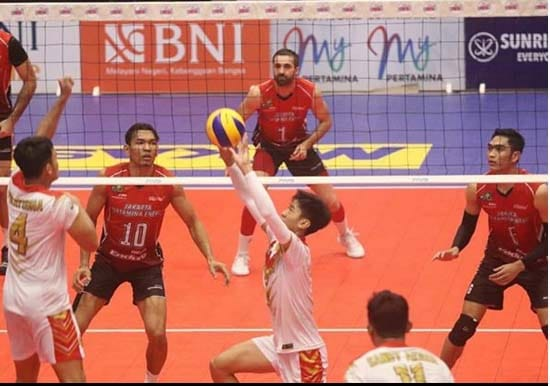
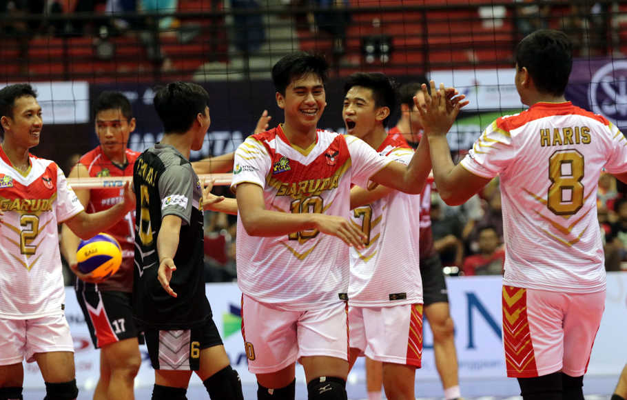

SELAMAT DATANG DI WEBSITE SANI NUR MARDITA
Saya ucapkan terima kasih atas kunjungan anda ke website saya. Pada website ini anda dapat melihat profil data diri saya dan beberapa berita terkini yang saya tulis di sini.
|  |  |  |
| Permainan Bola Voli: Pengertian, Sejarah, dan Teknik Dasar Apakah kamu suka bermain bola voli di sekolah? Yap, bola voli merupakan salah satu olahraga yang kerap kali dimainkan siswa di sekolah.Permainan bola voli merupakan olahraga dengan sistem beregu yang membutuhkan taktik dan strategi untuk memenangkan pertandingan. Di Indonesia sendiri,permainan bola voli tidak hanya dimainkan di sekolah, tetapi juga di berbagai perlombaan nasional hingga internasional. Baca selengkapnya |
Memukau di SEA Games 2022, Timnas Voli Putra Indonesia Tak Level Main di Tingkat Asia Tenggara Timnas voli putra Indonesia mampu mencuri perhatian dalam pagelaran SEA Games 2022 lalu.. Rivan Nurmulki tampil sat set di sepanjang turnamen kala menghadapi lawan setingkat Asia Tenggara. Kemanangan tiga set langsung bak menjadi syarat utama bagi Timnas Voli Putra Indonesia saat tampil di SEA Games 2022. Pada akhirnya, tim asuhan Jeff Jiang ini dapat mengamankan medali emas. Baca selengkapnya |
Daftar Juara Proliga 2022 Kategori Putra dan Putri Lengkap Ranking aProliga 2022 telah sukses diselenggarakan sejak 7 Januari 2022 hingga 27 Maret 2022 lalu di Padepokan Voli Jenderal Polisi Kunarto di Sentul, Bogor. Bogor LavAni sukses menjadi juara kategori putra pada kompetisi ini setelah berhasil mengalahkan Surabaya Bhayangkara Samator. Sebagai informasi, Bogor LavAni adalah tim bola voli yang dimiliki oleh mantan Presiden Indonesia, Susilo Bambang Yudhoyono.Baca selengkapnya |